Football
I've played football (soccer) all my life and still love it to this day; rain or shine :).
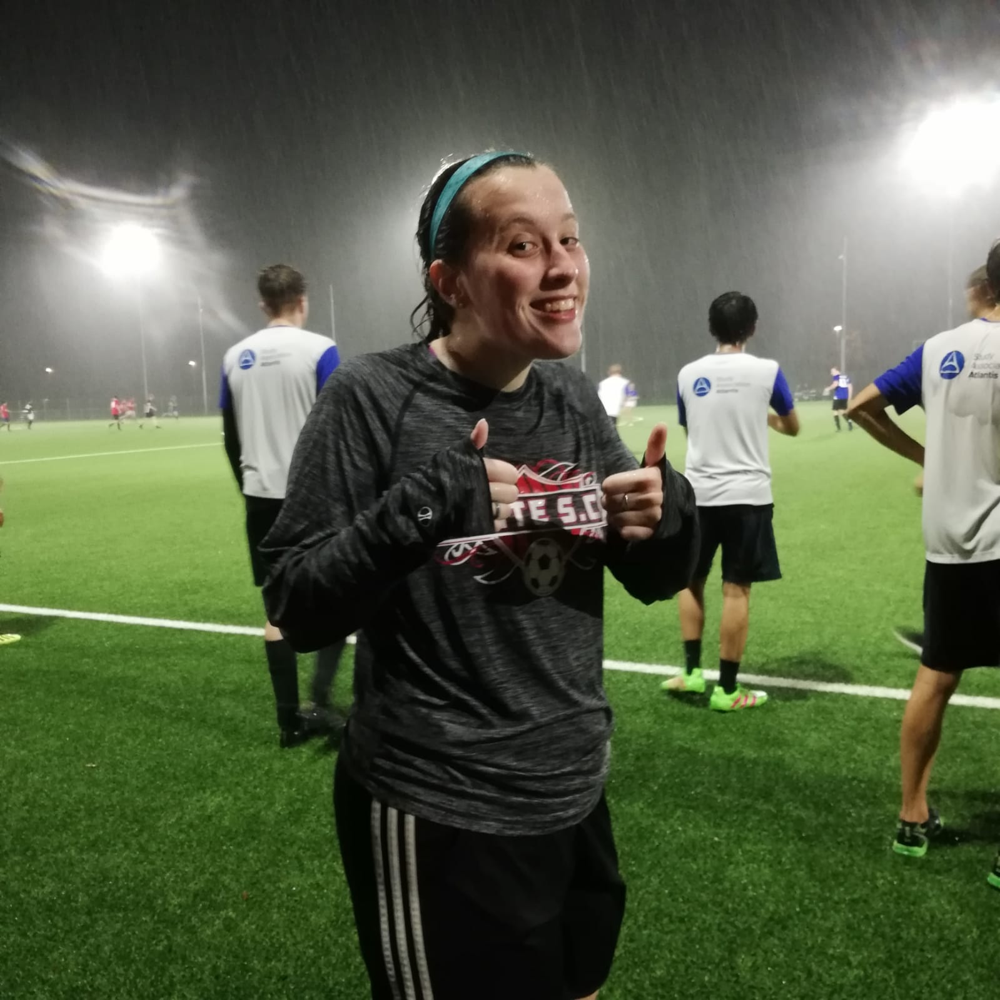
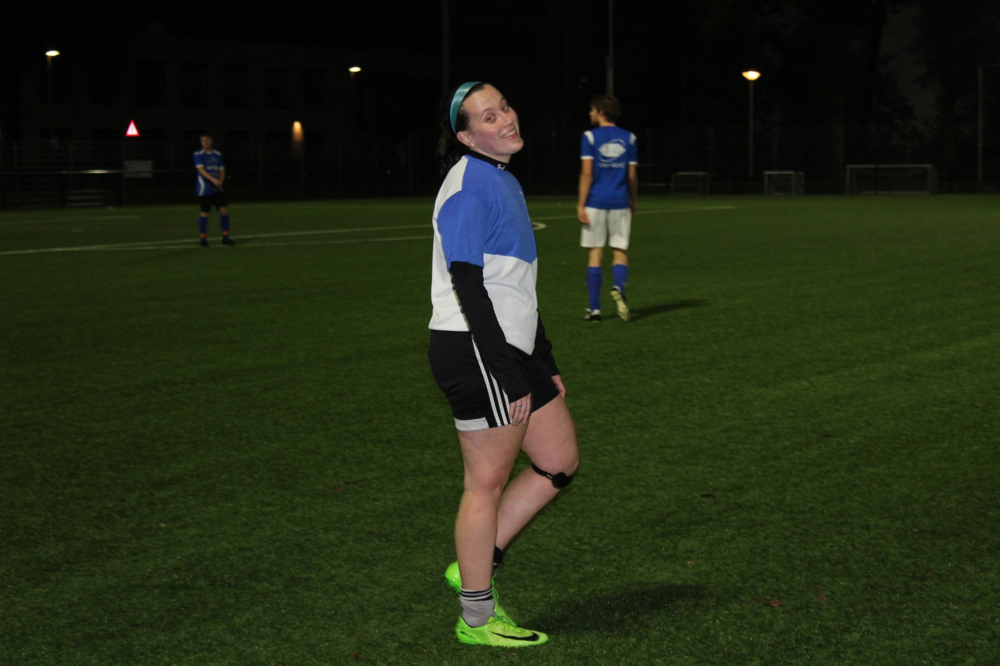
Hi, I'm Kath! I'm a climate hazard consultant and geo-data specialist based in the Netherlands, working at the intersection of flood risk modelling, anticipatory action and disaster risk reduction. My work goes from satellite to street level: turning complex hazard data into decisions communities can act on, before disaster strikes.
At Fast Hazard, I design scalable flood modelling workflows and translate dense technical outputs into tools and products that real decision-makers can use, from national risk assessments to community-level early warning. I'm also part of the Dutch Disaster Risk Reduction and Surge Support (DRRS) near-real-time flood team, providing rapid flood mapping and exposure analysis during active events.
My technical work spans flood simulation (FastFlood, LISEM, HEC-RAS), remote sensing, probabilistic uncertainty modelling and API development. The thread running through all of it is the same: making outputs that people can actually use.
Born and raised in Chicago to Dutch and American parents, I moved to the Netherlands for a BSc at the ATLAS Honours programme (University of Twente), followed by an MSc in Spatial Engineering at ITC, with fieldwork in Dominica and an internship at Deltares.
When I'm not looking at maps, you'll find me on a football pitch (rain or shine), baking, sewing, or out for a run through the farmland outside the city. I'm also back in Dutch class, working towards B2.
How a kid from Chicago ended up modelling floods in the Netherlands.
I grew up in Chicago, in the United States, to Dutch and American parents; though my Dutch father grew up in South America, so we were a culturally confused family. (It's also the reason my Spanish is very good!) One of my parents worked for an airline while I was growing up, which meant a lot of travelling, especially back to the Netherlands, which we made sure to visit every year.
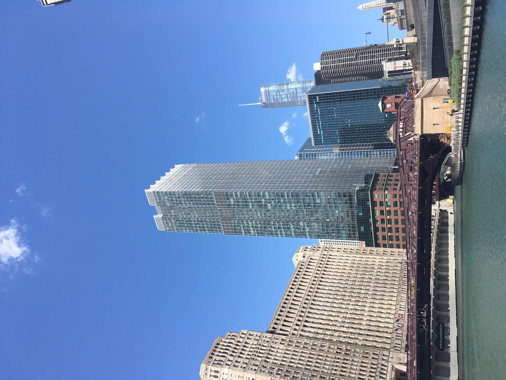
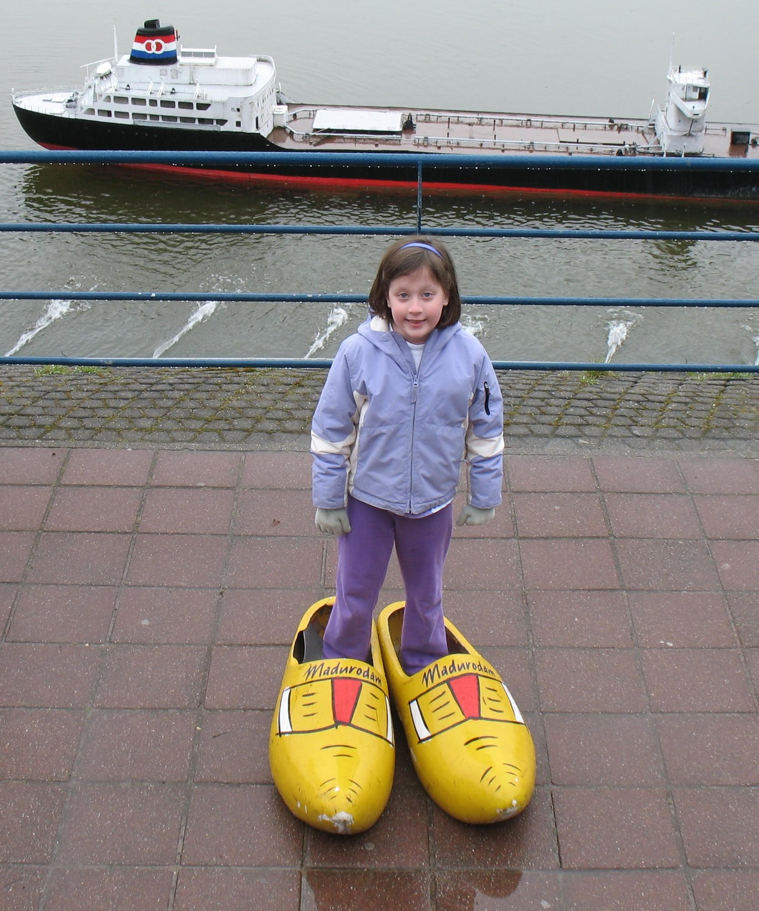
I always loved the Netherlands; getting to visit family, and just being there, so when it came time to choose a university, I decided to move and start my BSc at the University of Twente, at the Honours College. I had a great time at ATLAS, getting to explore all sorts of topics, from civil engineering to earth observation to natural hazards. It was during my bachelor's that I realised how much I liked studying natural hazards specifically, which led me to Spatial Engineering for my master's, also at Twente, but this time at the Faculty of Geo-Information Science and Earth Observation (ITC). That faculty let me combine the technical side of the work, remote sensing and spatial analysis, with the Natural Hazards and Disaster Risk Reduction working group.
That turned out to be a great decision! Not only did I learn a lot, but I also got a once-in-a-lifetime opportunity for my master's thesis: hands-on fieldwork on the island of Dominica. Dominica is a Small Island Developing State with a long history of devastating flooding and hurricane damage, and a strong national push to become more climate resilient; a perfect fit for my research. While I was there, I took in-field measurements to improve my flood model and spoke directly with local officials to help design a more specialised solution for their situation.
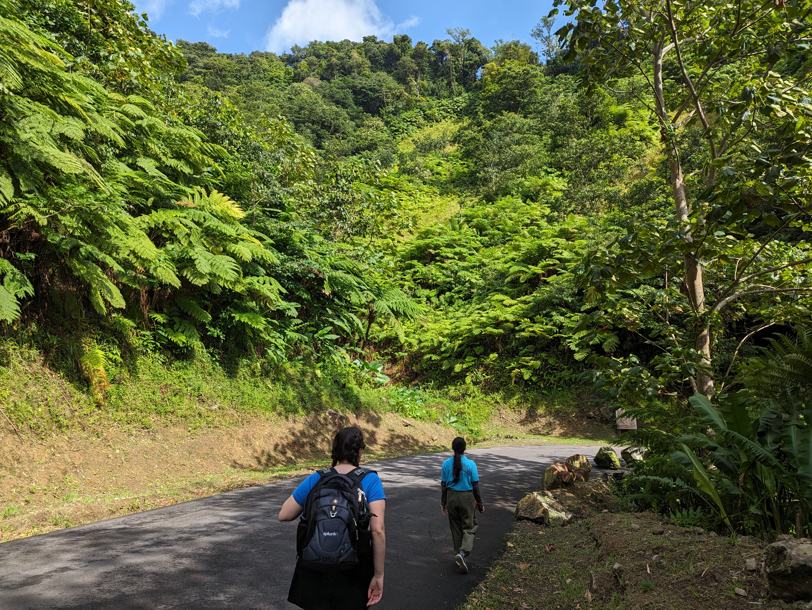

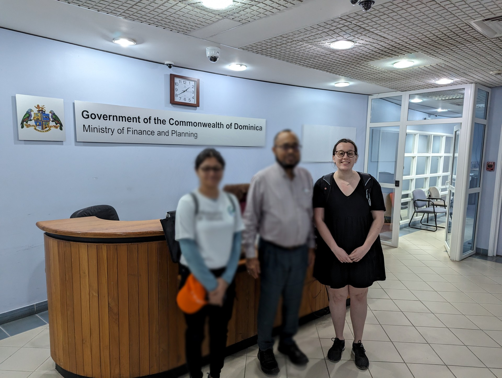
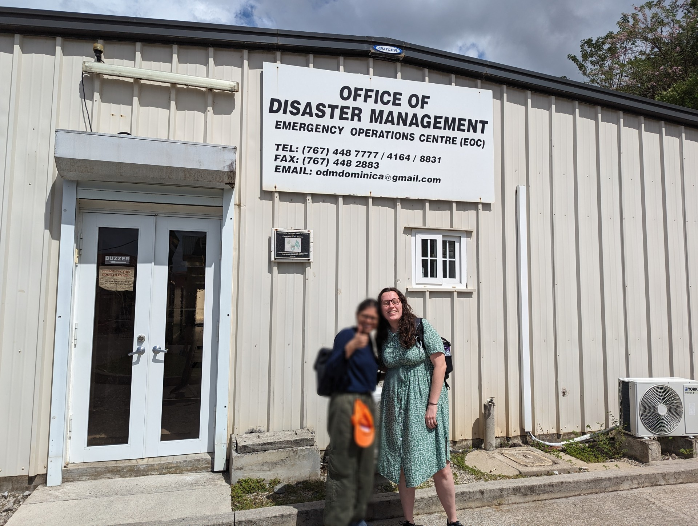
I also spent six months at Deltares as part of my MSc, which meant getting to live in Delft and meet a new team; and funnily enough, my work at Fast Hazard now crosses paths quite often with my old group there. After finishing my MSc, I started at Fast Hazard, where I still am today.
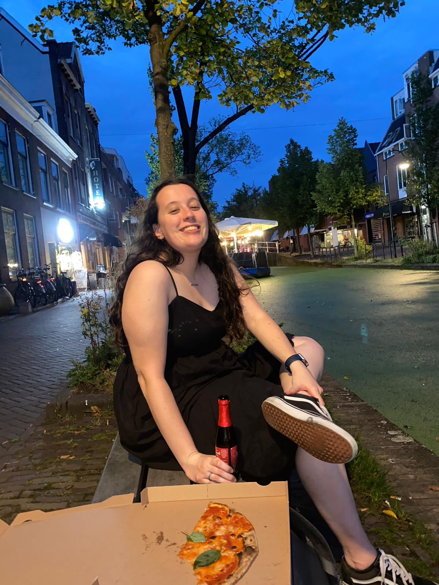
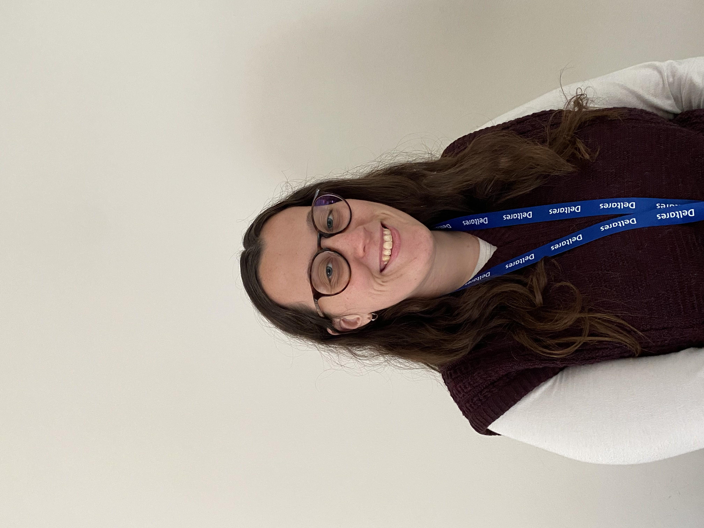
I have experience working across the full project lifecycle, from scoping data requirements and building processing pipelines, to producing deliverables and presenting findings to (non-)technical stakeholders. I've coordinated multidisciplinary teams under genuinely difficult conditions: emergency flood response, complex multi-partner consortia, and projects where the operational stakes are high.
Documentation, reproducibility, and clear communication are not afterthoughts for me; they are part of what it means to do the work properly.
My passion lies in making climate resilience and natural hazard risk information accessible and easier to understand for all stakeholders. The intersection between climate risk and vulnerable populations fuels my work, and I want to keep finding opportunities that challenge me in this area and where I can tackle complex socio-technical problems with spatial data and modelling. Spatial data has the ability to arm those vulnerable to the impacts of climate change, and I want to help them access this information!
Most of it involves being active or working with my hands.
I've played football (soccer) all my life and still love it to this day; rain or shine :).


I've loved baking since I was a kid, and got into cooking at university so I could eat real food even in my student house.
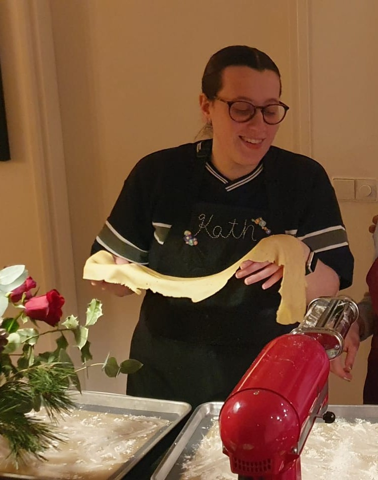
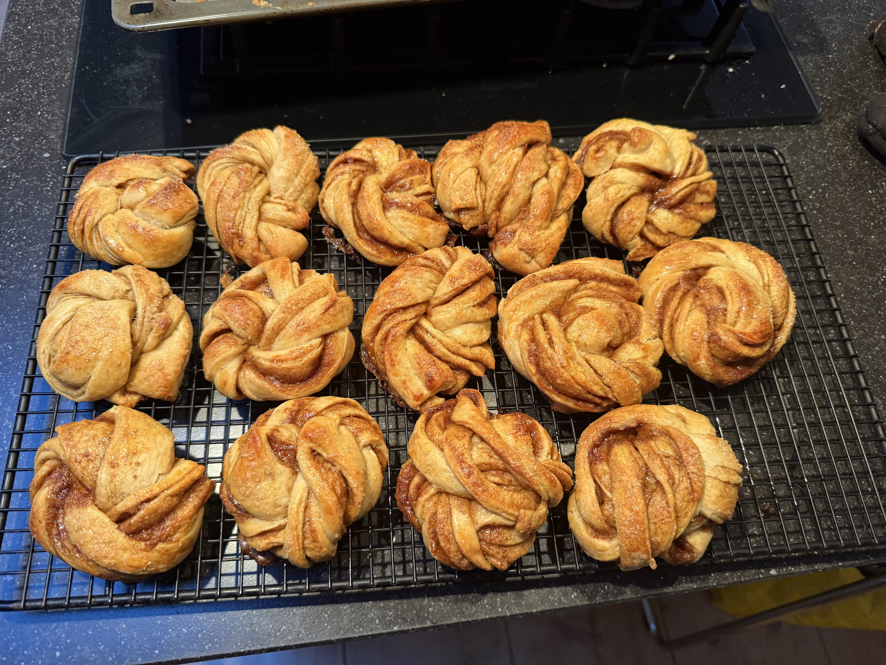
Making my own clothes, knitting and embroidery, plus a jog when the weather's nice; the best route is through farmland outside the city.
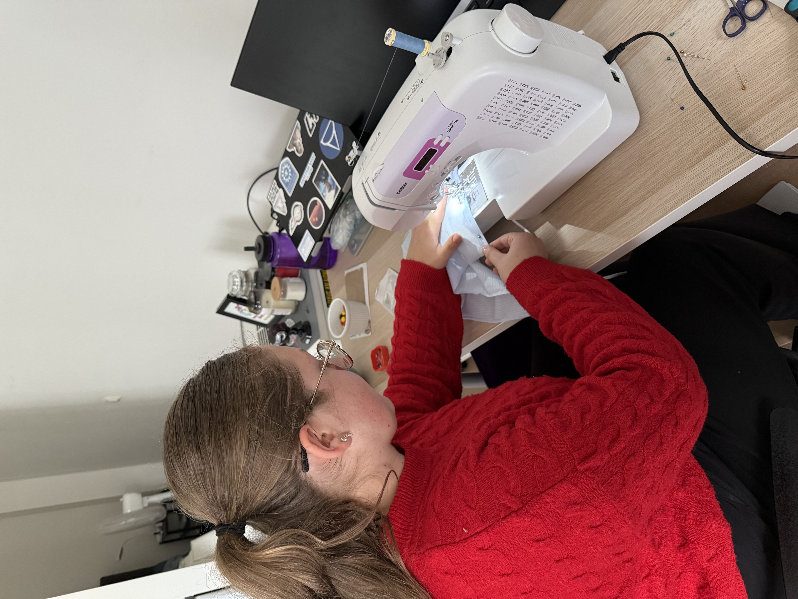
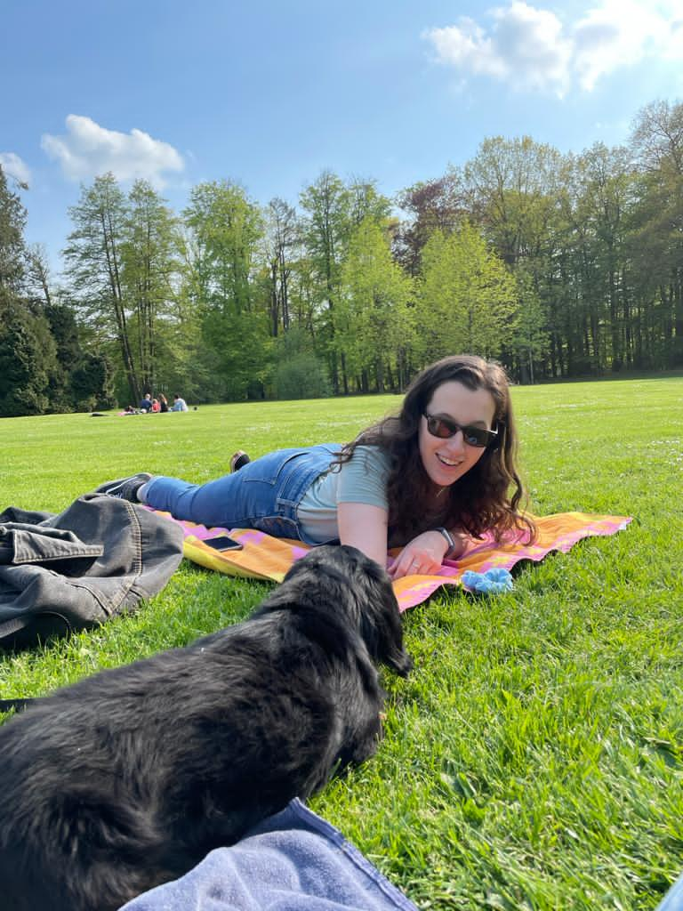
Interested in collaborating, discussing a project, or asking about my work? I'm open to conversations about climate hazard consulting, GIS analysis and tool development. Email me →